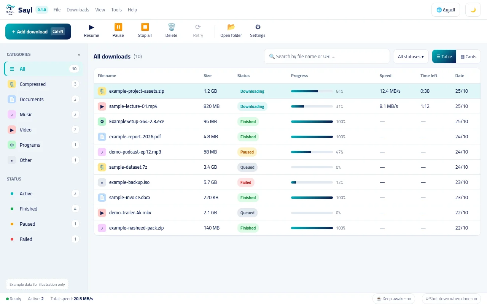

Choose Language · اختر لغة الموقع
You can toggle your preferred language anytime from the header button.
You can toggle your preferred language anytime from the header button.
Sayl splits your file across multiple parallel connections at once. If your connection drops or your computer restarts, it resumes right from the last byte.
Zero popup ads, no surveillance telemetry, crafted Arabic-first with seamless English support and refined dark and light modes.

Engineered to solve real Windows download headaches: maximum throughput, reliable resumption, and respect for your time.
Files are split into independent chunks downloaded concurrently, saturating your available broadband speed.
Connection dropped or PC restarted? Sayl records checkpoints in atomic .part files and resumes from the exact byte.
Carefully designed Arabic RTL typography alongside an authentic English experience, switchable anytime.
Automated grouping into programs, media, documents, and archives paired with instant fuzzy search.
Standalone CLI (sayl.exe) enables headless task automation, scripting, and CI pipelines with JSON outputs.
Runs quietly in the background without stealing focus, featuring notifications and optional auto-shutdown.
Capture downloads with a single click from Chrome, Edge, and Brave via our Manifest V3 extension, or control the download engine entirely from your terminal using the Rust CLI.
Native yt-dlp integration and modular site plugins to extract video streams in 4K resolution or audio-only formats.